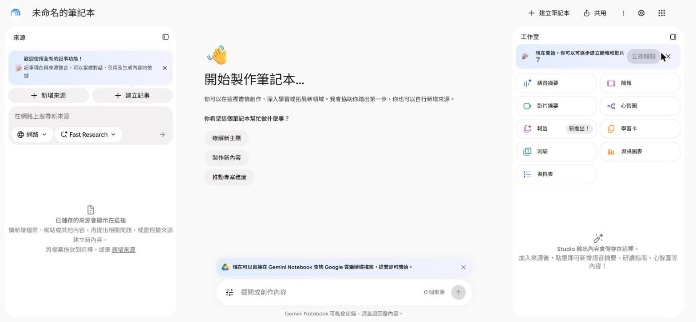
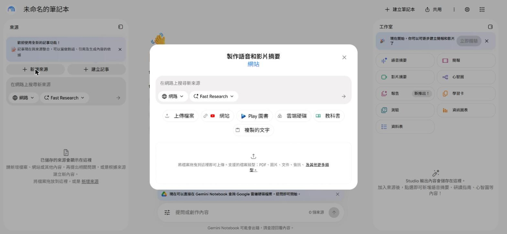
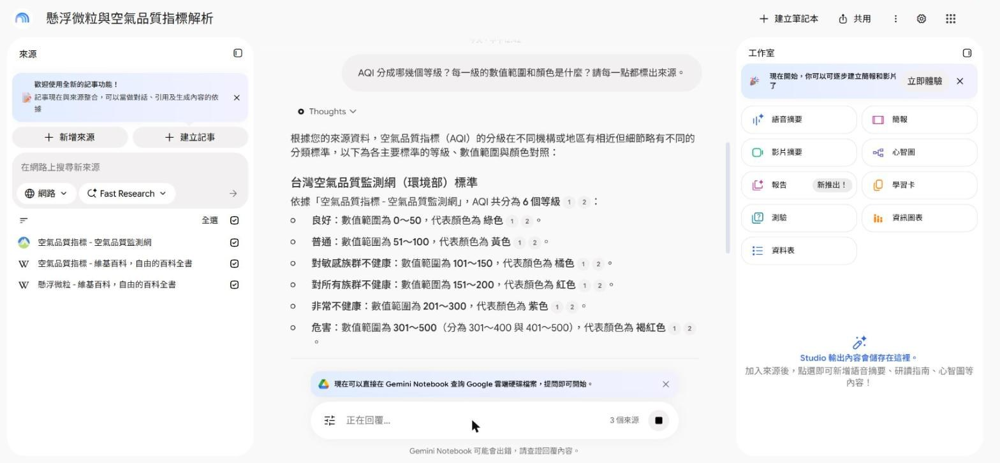
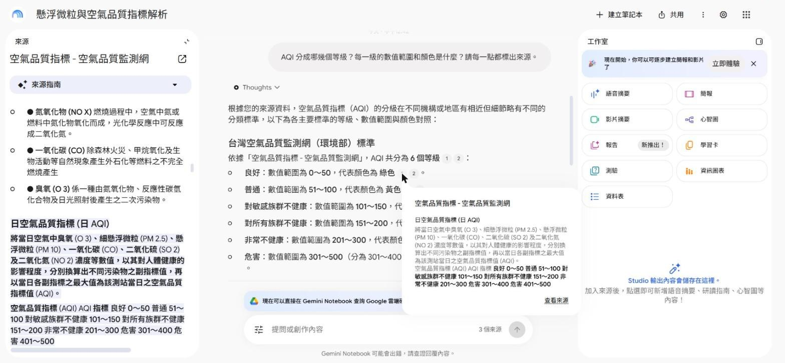
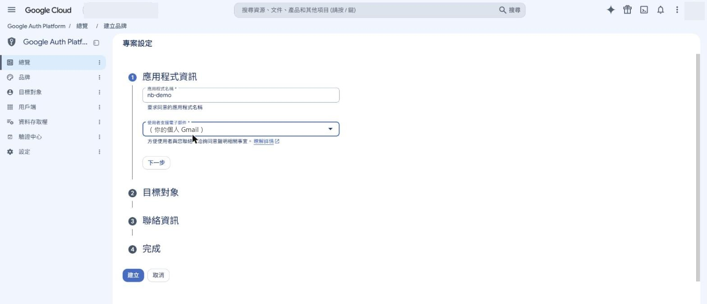
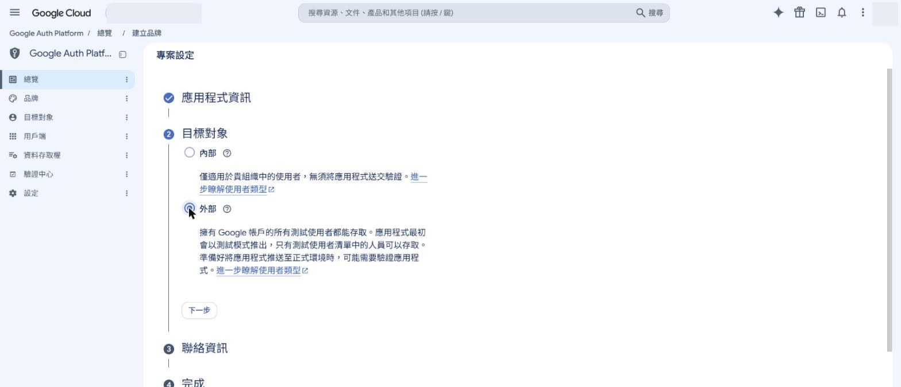
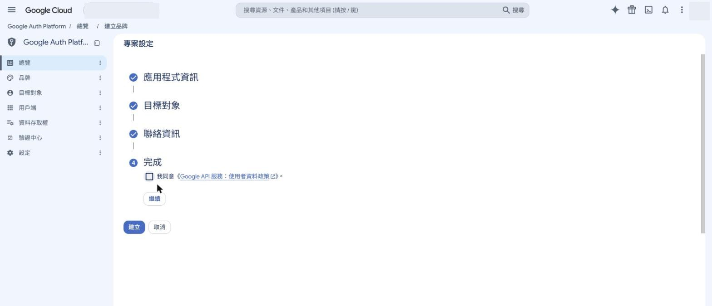
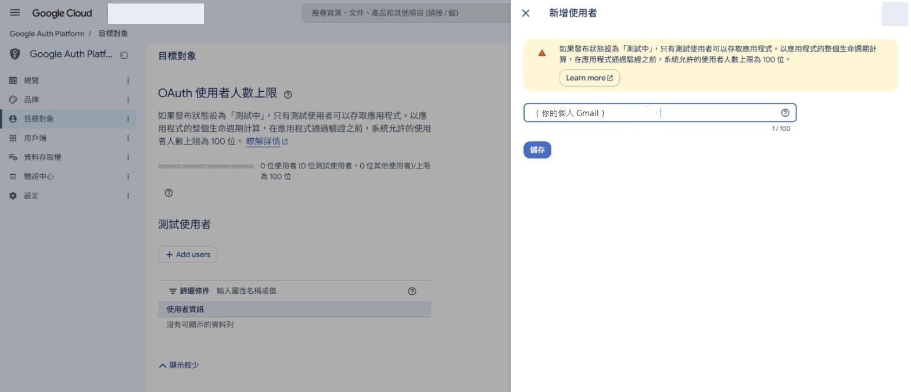
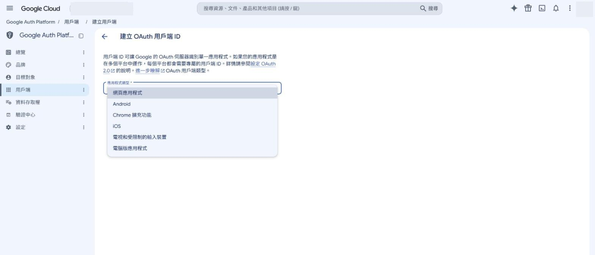
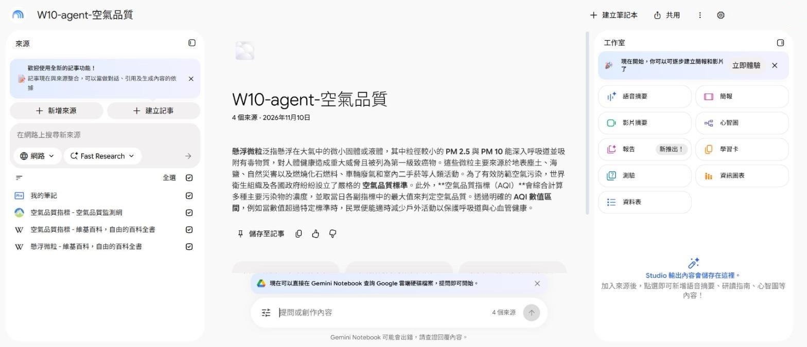

怎麼讀這一頁
深色框上面那一行字告訴你貼去哪裡：貼給 AI agent、貼進 Gemini Notebook 的提問框，或是自己在 PowerShell 打。每一節最後有一個勾選框，勾了進度條會往前走（只存在這台電腦的瀏覽器）。
0 今天的路線、三張證據、就位
今天留三張截圖當證據（交件方式看 e學苑 公告）：
- 證據 1 你手動建的筆記本：一句回答＋點開的引用（看得到原文那一段）。
- 證據 2 agent 給你的計畫，以及你回「可以」的那一段對話。
- 證據 3 Gemini Notebook 網頁上，agent 建的那一本筆記本與它的來源清單。
@gms.ndhu.edu.tw）呼叫 API 會被擋，錯誤是 403 PERMISSION_DENIED (WORKSPACE_ACCOUNT_NOT_SUPPORTED)。沒有個人 Gmail 的同學：現在用手機申請一個，或第三部分跟旁邊同學一起看。做什麼用 Chrome 或 Edge 開一個無痕視窗（教室電腦是共用的，無痕視窗關掉就登出）。多久：10 秒
打什麼鍵盤
Ctrl＋Shift＋N。應該看到深色的無痕視窗。
做什麼下載起始檔、解壓縮到桌面。裡面四個檔：給 agent 的提示詞、來源清單、一份「我的筆記」、一支小工具（agent 跑不動時的備援）。多久：1 分鐘
打什麼按這裡下載：notebook-agent-starter.zip，在檔案上按右鍵 →「解壓縮全部」→ 位置選桌面。
應該看到桌面多一個資料夾
notebook-agent-starter，裡面有agent-prompt.zh-TW.md、sources.txt、my-notes.md、nb.ps1。做什麼用記事本打開
my-notes.md，把三句話改成你自己的話（題目可以沿用空氣品質，也可以換成你期中報告的題目），存檔。多久：3 分鐘應該看到檔案裡是你寫的三句：想弄清楚的問題、目前的猜想、最想確認的一點。不要寫姓名、學號。
1-1 認識它、登入
目標：用個人 Gmail 進到 Gemini Notebook 首頁。
一般的聊天 AI 是「它知道什麼就講什麼」，講錯了你很難查。Gemini Notebook 反過來：你先給它來源，它只根據這些來源回答，而且每一句後面有小數字，點下去會跳到原文那一段。所以它適合寫報告時用來「讀懂一疊資料、查證每一句話」。它以前叫 NotebookLM，舊網址會自動轉過來。
做什麼在無痕視窗開 Gemini Notebook，用個人 Gmail 登入。多久：1 分鐘
https://notebook.google.com
應該看到左上角寫 Gemini Notebook，右上角有一顆藍色的 ＋ 新增筆記本。第一次登入可能先出現歡迎畫面，照畫面按下一步就好。
404 NOT_FOUND (Account not found for user.)。1-2 建一本筆記本、放進三種來源
目標：一本筆記本，左邊「來源」有四項（三個網頁＋一段你自己的文字）。
筆記本好不好用，九成看你放了什麼進去。今天練三種最常用的：網頁、YouTube 影片（選做）、自己貼的文字。
做什麼按 ＋ 新增筆記本。多久：5 秒
應該看到三欄畫面：左邊來源、中間對話、右邊工作室；標題暫時是「未命名的筆記本」。

實際畫面（老師 11/10 截）：左「來源」有「＋ 新增來源」，中間是對話，右邊「工作室」可以做語音摘要、心智圖等。 做什麼按左邊的 ＋ 新增來源，在跳出的視窗選網站（有連結和 YouTube 圖示的那一顆）。多久：10 秒
應該看到標題「網站與 YouTube 網址」，中間一個大框寫「貼上任何連結」。下面的小字值得讀：只會匯入網頁上看得到的文字、不支援付費文章、YouTube 只匯入文字轉錄稿。

實際畫面：新增來源有六種入口。今天用「網站」和「複製的文字」。 做什麼把下面三個網址一次貼進去（用換行或空格分開），按插入。想用自己的題目，就換成你期中報告用過的公開網頁。多久：老師實測三個網頁約 8 秒就處理完
https://zh.wikipedia.org/zh-tw/%E7%A9%BA%E6%B0%A3%E5%93%81%E8%B3%AA%E6%8C%87%E6%A8%99 https://airtw.moenv.gov.tw/CHT/Information/Standard/AirQualityIndicator.aspx https://zh.wikipedia.org/zh-tw/%E6%87%B8%E6%B5%AE%E7%B2%92%E5%AD%90
應該看到左邊出現三項：「空氣品質指標 - 空氣品質監測網」「空氣品質指標 - 維基百科，自由的百科全書」「懸浮微粒 - 維基百科，自由的百科全書」，每項右邊有打勾。筆記本會自己取名字（老師那次變成「懸浮微粒與空氣品質指標解析」）。
做什麼再按一次 ＋ 新增來源 → 複製的文字，把
my-notes.md的內容整段貼進去，插入。多久：30 秒應該看到左邊變成四項，中間對話框右下寫「4 個來源」。
做什麼（選做）再加一支 YouTube 影片：要公開、而且有字幕的才收得進來。多久：1 分鐘
應該看到收得進來就多一項；收不進來會顯示匯入失敗——這正是「沒有字幕就沒有文字可讀」的樣子，記下來，第三部分 agent 也會遇到一樣的事。
卡住了：來源加不進去
- 網頁要登入才看得到、或是付費文章：收不進來，換一個公開的頁面。
- 貼了雲端硬碟的檔案網址：改按「雲端硬碟」那一顆，不是「網站」。
- 一直轉圈：重新整理頁面，看左邊實際有幾項再決定要不要重加（不要連按，會加出重複的）。
1-3 問三題、點引用回原文
目標：三個回答，每一個都點開過至少一個引用。
回答後面的小數字就是「這句話是根據哪一段」。點下去看原文，是用這個工具最重要的一個動作——不點，它就跟一般聊天 AI 沒有差別。
做什麼在中間下方的框（寫著「提問或創作內容」）問第一題，按 Enter。多久：老師實測約 15–20 秒出完
AQI 分成哪幾個等級？每一級的數值範圍和顏色是什麼？請每一點都標出來源。
應該看到一段條列，每一點後面有灰色小圓圈數字（例如 1、2）。老師那次的開頭是「根據您的來源資料，空氣品質指標（AQI）的分級在不同機構或地區有相近但細節略有不同的分類標準…」，接著列出良好 0～50、普通 51～100…。你的字句會不一樣，這是正常的。

實際畫面：每一點後面的小數字就是引用。 做什麼點任何一個小數字。多久：5 秒
應該看到跳出一張小卡，寫著來源名稱和被引用的那一段；同時左邊欄位換成那個來源的全文，被引用的那一段反白。小卡右下有「查看來源」。 證據 1 截這個畫面。

實際畫面：點了「良好…綠色」後面的 1，左邊跳到環境部那一頁的「日空氣品質指標」段落。 做什麼再問兩題。第二題請它拿你的筆記去對來源；第三題自己出。多久：2 分鐘
我的筆記第 2 點的猜想對嗎？請引用其他來源說明哪裡對、哪裡不對。
應該看到它會引用你貼的那段文字，也引用網頁來源，告訴你猜想跟來源一不一樣。
1-4 找一句「講太滿」的
目標：找到一句「有標引用，但引用的那一段其實沒這樣寫」的話，寫下來。
有引用不等於講對。畫面最下面它自己就寫著：「Gemini Notebook 可能會出錯，請查證回覆內容。」你要練的是把一句話拆成兩半，各自對原文。
做什麼回到第一題的回答，挑一點，例如「良好：數值範圍 0～50，代表顏色為綠色」。把它拆成兩半：①範圍 0～50、②顏色是綠色。點它後面的每個引用，看反白的那一段裡兩半是不是都有寫。多久：5 分鐘
應該看到常見的情況是：某一個引用的段落只寫了數字、沒寫顏色（顏色寫在別的引用，或是在來源的表格裡）。請對照上面那張實際畫面：小卡裡的那一段有「良好 0～50」，你找得到「綠色」兩個字嗎？
做什麼把結果寫成一行，貼在你的筆記裡。多久：1 分鐘
我檢查的句子：＿＿＿＿ 引用 1 有寫到的：＿＿＿＿ 沒寫到的：＿＿＿＿ 引用 2 有寫到的：＿＿＿＿ 沒寫到的：＿＿＿＿ 我的判斷：□ 兩半都查得到 □ 有一半查不到，我會改寫成＿＿＿＿
2-1 為什麼要 API？它能做什麼、還不能做什麼
目標：說得出 API 做得到的三件事、做不到的三件事。
剛才放四個來源，你點了十幾下。如果是一份報告的二十個來源、或每週都要建一本呢？API（應用程式介面）就是服務開給程式用的窗口：你用滑鼠點的事，程式改用「送一個請求」去做。AI agent 會寫程式、會跑指令，所以它可以透過這個窗口替你做。
| 四個詞 | 白話 | 今天在哪裡遇到 |
|---|---|---|
| API | 服務開給程式用的窗口。網址是 https://notebook.googleapis.com/v1。 | agent 送請求去建筆記本、加來源 |
| Google Cloud 專案（project） | 一個「戶頭」：用了哪些 API、用了幾次，都記在它名下。預覽期間這個 API 免費。 | agent 幫你建一個，名字像 nb-你的代號 |
| OAuth 同意 | 瀏覽器跳出「某某想要存取你的 Google 帳戶」，你按「允許」的那一步。這一步只有你能按。 | 第三部分會跳兩次 |
| 權杖（access token） | 你按了允許之後拿到的通行證，一串很長的字。一小時就過期，而且誰拿到誰就能用。 | agent 每次請求都帶著它；不准印出來 |
再加一個工具名：gcloud，Google Cloud 的命令列工具，負責登入、開專案、發權杖。等一下 agent 會幫你裝。
API 現在做得到的，就七件
| 做得到（官方文件的七個方法） | 還做不到（官方列在未來規劃） |
|---|---|
| 建筆記本、看一本筆記本、列出所有筆記本、改筆記本名字 | 刪除筆記本或來源 |
| 加來源：公開網頁、YouTube（要有字幕）、純文字、Markdown | 上傳檔案（PDF 等）、加雲端硬碟的檔案網址 |
| 看一個來源的處理狀態、列出一本裡的所有來源 | 向筆記本提問、產生語音摘要等工作室內容 |
| 個人 Google 帳號 | 學校／公司（Workspace）帳號 |
想玩玩看：互動概念頁有「API 做得到嗎」分類遊戲、權杖倒數、請求產生器。
3-1 把提示詞貼給 agent，先看計畫
目標：agent 回你一份計畫，你讀完、回「可以」。
Google 官方的入門頁第一段就寫「Set up with a coding agent (Recommended)」——官方自己建議交給 agent 設定，還附了一段提示詞。我們把它改成中文，多加三條規矩：先給計畫、權杖不准印出來、不准動你原本的筆記本。
做什麼打開你的 agent，把工作資料夾指到桌面的
notebook-agent-starter（Codex、Antigravity：「開啟資料夾」選它）。多久：1 分鐘應該看到agent 的檔案清單裡有
my-notes.md、sources.txt。做什麼把整段提示詞貼給 agent（也在起始檔的
agent-prompt.zh-TW.md裡）。多久：它約 1 分鐘內回計畫請幫我在這台電腦設定並測試 Gemini Notebook API（https://notebook.googleapis.com/v1）。 官方文件：https://developers.google.com/notebook/docs/quickstart 【規則，全程遵守】 A. 先只給我「計畫」：你要裝什麼、會開幾次瀏覽器要我登入、哪一步要我自己到網頁上做、會在我的 Google 帳號裡建立什麼。我回「可以」之後才開始動手。 B. 每做完一步，把你實際看到的輸出貼給我看；失敗就把完整錯誤訊息給我，不要說「應該成功了」。 C. 需要我在瀏覽器登入或按「允許」的時候，停下來告訴我，等我說「好了」再繼續。我會用「個人 Gmail」，不是學校帳號。 D. 不要把存取權杖（access token）印在畫面上、寫進檔案或貼進對話；要用就放在變數裡。 E. 不要修改或刪除我原本的筆記本；只新增這次這一本。 F. 這台電腦是 Windows 就用 PowerShell；送 JSON 請用 Invoke-RestMethod，並把內容轉成 UTF-8 位元組再送（中文才不會變亂碼）。 【步驟】 1. 檢查 gcloud（Google Cloud CLI）有沒有裝：`gcloud --version`。 沒有的話，Windows 用 `winget install --id Google.CloudSDK -e` 安裝，Mac 用 `brew install --cask gcloud-cli`；裝完重新找到 gcloud 再確認版本。 2. 登入 gcloud：`gcloud auth login`（會開瀏覽器，等我登入）。 3. 專案：用 `gcloud projects list --limit=10` 列出我有的專案讓我選。 我沒有專案的話，幫我建一個：`gcloud projects create nb-加上六個隨機小寫英數字`（專案 ID 與名稱都不要有空格），再 `gcloud config set project 那個ID`。 4. 在那個專案啟用 API：`gcloud services enable notebook.googleapis.com --project=專案ID`。 5. 停下來，請我做一件只有我能做的事：照學生頁 3-4 在 Google Cloud Console 建一個「電腦版應用程式」OAuth 用戶端， 把下載的 JSON 改名成 `client.json` 放進這個資料夾。等我說「放好了」再繼續。不要打開或印出這個檔的內容。 （原因：官方文件那行不帶用戶端檔的登入，2026-11-10 實測會被 Google 顯示「系統已封鎖這個應用程式」。） 接著取得帶 notebook 權限的本機憑證（會再開一次瀏覽器，等我按允許）： `gcloud auth application-default login --client-id-file=client.json --scopes="https://www.googleapis.com/auth/cloud-platform,https://www.googleapis.com/auth/notebook"` 6. 取權杖放進變數（不要印出來）：`gcloud auth application-default print-access-token`。 7. 驗證：帶兩個標頭 `Authorization: Bearer 權杖` 與 `x-goog-user-project: 專案ID`， GET https://notebook.googleapis.com/v1/notebooks ，告訴我 HTTP 狀態與看到幾本筆記本（只講數量）。 8. 建一本新筆記本：POST https://notebook.googleapis.com/v1/notebooks ，內容 `{"displayName":"W10-agent-空氣品質"}`。 9. 把下面每個來源加進這本筆記本：POST https://notebook.googleapis.com/v1/{筆記本的 name}/sources - 網頁：內容 `{"webContent":{"url":"網址"}}` - 文字檔：讀檔後內容 `{"displayName":"我的筆記","mimeType":"text/markdown","textContent":{"content":"檔案全文"}}` 10. 每 3 秒查一次 GET https://notebook.googleapis.com/v1/{筆記本的 name}/sources ， 直到每個來源的 state 都是 ACTIVE 或 FAILED。 11. 最後給我一張表：每個來源的名稱、state；FAILED 的附上 error 訊息。再給我筆記本的 name，我要自己到 https://notebook.google.com 打開它檢查。 【來源】 - https://zh.wikipedia.org/zh-tw/%E7%A9%BA%E6%B0%A3%E5%93%81%E8%B3%AA%E6%8C%87%E6%A8%99 - https://airtw.moenv.gov.tw/CHT/Information/Standard/AirQualityIndicator.aspx - https://zh.wikipedia.org/zh-tw/%E6%87%B8%E6%B5%AE%E7%B2%92%E5%AD%90 - 這個資料夾裡的 my-notes.md（如果有）應該看到agent 沒有馬上動手，而是先列出計畫：要裝 gcloud、會開兩次瀏覽器、有一步要你自己到網頁上建用戶端、會建一個專案和一本筆記本。證據 2 截這一段。
做什麼讀計畫，對這三題，都答得出來才回「可以」。多久：2 分鐘
應該看到① 它要裝什麼？（應該只有 Google Cloud CLI）② 它會在你帳號裡建立什麼？（一個專案、一本筆記本）③ 哪幾步要你動手？（兩次瀏覽器登入、自己建 OAuth 用戶端）。計畫裡如果出現「刪除」「重設」「把權杖存檔」，請它拿掉再開始。
卡住了：agent 沒給計畫，直接開始裝
按停止，回它一句：「先停。照規則 A，只給計畫，我說可以再動手。」這不是 agent 壞掉，是你在練「退回一次」。
3-2 agent 安裝 gcloud
目標：agent 給你看 gcloud --version 的輸出。
gcloud 是唯一要裝的東西。教室電腦有還原卡，重開機就會不見，所以每次上課都要重裝——這種重複的苦工正適合交給 agent。
做什麼看著 agent 跑安裝。它可能會問你「可以執行這個指令嗎？」——讀一下指令再按允許。多久：老師的 Windows 11 實測約 1 分半（教室網路慢的話會更久）
winget install --id Google.CloudSDK -e
應該看到agent 跑的指令長得像上面這行（Mac 是
brew開頭）。老師實測：這樣裝不用管理員密碼，裝在自己的使用者資料夾AppData\Local\Google\Cloud SDK。做什麼等 agent 回報版本。多久：幾秒
Google Cloud SDK 592.0.0 bq 2.1.41 core 2026.10.30 gcloud-crc32c 1.0.0 gsutil 5.38
應該看到第一行是
Google Cloud SDK加一個版本號（老師 11/10 裝到的是 592.0.0，你的可能更新）。
卡住了：裝完卻說找不到 gcloud
剛裝好的程式，已經開著的視窗還不認得。告訴 agent：「gcloud 裝在 %LOCALAPPDATA%\Google\Cloud SDK\google-cloud-sdk\bin\gcloud.cmd，請用完整路徑執行，或重新開一個終端機。」
卡住了：教室電腦沒有 winget，或安裝被擋 ⚠️ 現場為準
請 agent 改用官方安裝程式：到 cloud.google.com/sdk/docs/install 下載 Windows 安裝檔，安裝時選「只為我自己安裝」。再不行，跟旁邊裝好的同學一組，或用自己的筆電。
3-3 第一次登入、專案、啟用 API
目標：你用個人 Gmail 按過一次允許；agent 回報專案 ID，API 啟用成功。
agent 可以裝工具、跑指令，但它不能替你同意把帳號交出去。登入和「允許」是你的事。登入之後，Google 要知道「這些請求記在誰的戶頭」——專案就是那個戶頭；在專案裡把 Gemini Notebook API 打開，請求才送得進去。
做什麼agent 跑
gcloud auth login，瀏覽器自己跳出來。選個人 Gmail，讀同意畫面，按允許，回 agent 說「好了」。多久：1 分鐘應該看到同意畫面寫的是 Google Cloud SDK 想要存取你的帳戶（實際字樣 ⚠️ 現場為準）；按允許後網頁顯示已通過驗證。
做什麼agent 列出你現有的專案問你選哪個；第一次用的人沒有專案，讓它建一個新的，再啟用 API。多久：老師實測建專案約 8 秒、啟用 API 約 4 秒
gcloud projects create nb-你的代號 Create in progress for [https://cloudresourcemanager.googleapis.com/v1/projects/nb-你的代號]. Waiting for [operations/create_project.global.…] to finish... .done. gcloud config set project nb-你的代號 gcloud services enable notebook.googleapis.com --project=nb-你的代號 Operation "operations/acat.…" finished successfully.
應該看到像上面這樣：建專案最後一行
.done.，啟用 API 最後一行finished successfully.。專案 ID 全世界不能重複，所以 agent 會在後面加一串亂碼。不用綁信用卡（老師實測沒有設定帳單也建得起來、啟用得了）。
accounts.google.com；③ 它要的權限你看得懂。有一項不對就關掉視窗，問老師。卡住了：瀏覽器沒跳出來
agent 的輸出裡會有一條很長的 https://accounts.google.com/… 網址，把它複製到無痕視窗打開。教室電腦預設瀏覽器若已經登入別人的帳號，一定要用無痕視窗。
卡住了：建專案失敗，訊息提到 Terms of Service ⚠️ 現場為準
全新的帳號第一次用 Google Cloud，要先同意服務條款：在無痕視窗開 console.cloud.google.com，用同一個個人 Gmail 登入，自己讀過條款再勾同意，然後回 agent 說「請再試一次建專案」。
卡住了：專案 ID 已被使用、或指令說找不到專案
請 agent 換一串隨機字再建一次；專案 ID 和名稱都不要有空格（老師實測名稱帶空格會讓指令壞掉），也不要放姓名、學號。
3-4 你來做：建一個自己的 OAuth 用戶端
目標：起始檔資料夾裡多一個 client.json。
這一步官方入門文件沒有寫，是老師實測撞出來的。照官方那一行直接登入，Google 會顯示「系統已封鎖這個應用程式——這個應用程式嘗試存取您 Google 帳戶中的機密資訊」。原因是 gcloud 內建的那張「身分證」不被允許碰你的筆記本。解法是在你自己的專案裡辦一張自己的身分證（OAuth 用戶端），再用它登入。這幾步要在網頁上點，而且牽涉同意條款，所以你自己來，不交給 agent。
做什麼在無痕視窗（個人 Gmail）開下面這個網址，左上角專案確認是 agent 剛建的那一個，按開始。多久：30 秒
https://console.cloud.google.com/auth/overview
應該看到「專案設定」四步：應用程式資訊、目標對象、聯絡資訊、完成。
做什麼第 1 步應用程式資訊：名稱填
nb-demo，「使用者支援電子郵件」選你自己的 Gmail，按下一步。多久：30 秒
實際畫面（老師 11/10 截；專案名稱與信箱已蓋掉）。 做什麼第 2 步目標對象選外部 → 下一步。第 3 步聯絡資訊填自己的 Gmail → 下一步。多久：30 秒

實際畫面：選「外部」；它寫明一開始是測試模式，「只有測試使用者清單中的人員可以存取」。 做什麼第 4 步完成：讀過《Google API 服務：使用者資料政策》再勾「我同意」→ 繼續 → 藍色的建立。多久：1 分鐘

實際畫面：這個勾是你在同意條款，只有你能按。 做什麼左邊選目標對象，往下捲到測試使用者 → ＋ Add users → 輸入你自己的 Gmail、按 Enter → 儲存。等轉圈圈結束再離開。多久：儲存要等 10 秒左右

實際畫面：信箱變成一顆膠囊、右下顯示 1/100，再按儲存。 應該看到面板關掉後，測試使用者表格裡有你的信箱，上面寫「1 位測試使用者」。老師第一次就是沒等它存完就離開，結果後面登入被擋。
做什麼左邊選用戶端 → 建立用戶端 → 「應用程式類型」選電腦版應用程式 → 建立。多久：30 秒

實際畫面：選最下面的「電腦版應用程式」。名稱用預設的就好。 做什麼跳出「OAuth 用戶端已建立」→ 按下載 JSON。把下載的檔案搬到桌面的
notebook-agent-starter資料夾，改名成client.json。回 agent 說「放好了」。多久：1 分鐘應該看到資料夾裡有
client.json。下載的原檔名很長，是client_secret_開頭。
client.json 裡有一段密鑰，當它是鑰匙：不要貼給 AI、不要傳給同學、不要放進 GitHub。那個視窗關掉以後密鑰就看不到了，所以一定要當下按下載。下課前把這個檔刪掉（收尾有寫）。3-5 第二次登入：用自己的用戶端
目標：agent 那邊出現 Credentials saved to file。
這次是替「你電腦上的程式」拿憑證，而且指定它能碰 Gemini Notebook。因為用戶端是你剛剛自己建的、沒有送 Google 審查，所以會多一個「尚未驗證」的警告——這是你自己的東西，可以繼續；如果不是你建的，看到這個警告就該停。
做什麼agent 會跑下面這一行，瀏覽器再跳一次。選個人 Gmail。多久：1 分鐘
gcloud auth application-default login --client-id-file=client.json --scopes="https://www.googleapis.com/auth/cloud-platform,https://www.googleapis.com/auth/notebook"
應該看到警告頁「Google 尚未驗證這個應用程式」→ 按進階 → 前往 nb-demo → 把它要求的權限勾起來 → 繼續（實際字樣 ⚠️ 現場為準）。
做什麼回到 agent。多久：幾秒
Credentials saved to file: [C:\Users\你的帳號\AppData\Roaming\gcloud\application_default_credentials.json] These credentials will be used by any library that requests Application Default Credentials (ADC).
應該看到第一行
Credentials saved to file。
卡住了：「系統已封鎖這個應用程式」
指令少了 --client-id-file=client.json（走成官方那行了）。請 agent 補上再跑一次。
卡住了：「已封鎖存取權：『nb-demo』未完成 Google 驗證程序」
你登入的帳號不在測試使用者清單裡。回 3-4 第 5 步，確認表格裡真的有你的信箱（要等儲存轉完），再請 agent 重跑登入。
3-6 agent 建筆記本、放來源、等到 ACTIVE
目標：agent 給你一張表，每個來源的狀態都是 ACTIVE（或說明為什麼 FAILED）。
來源放進去不是馬上能用：Google 要去抓那個網頁、讀完，這段時間狀態是 PROCESSING（處理中），好了變 ACTIVE，抓不到變 FAILED。所以 agent 要每幾秒回去問一次，不能送出去就說完成。
做什麼看 agent 先做驗證（列出筆記本），再建新的一本。多久：幾秒
GET https://notebook.googleapis.com/v1/notebooks → 200 POST https://notebook.googleapis.com/v1/notebooks → 200 { "name": "notebooks/（一串英數字）", "displayName": "W10-agent-空氣品質", "createTime": "2026-11-10T…Z" }應該看到它回報筆記本的
name，格式是notebooks/加一長串（老師實測建立成功）。畫面上不應該出現以ya29.開頭的一大串字——那是權杖，出現了就請它不要再印。做什麼看 agent 把三個網頁和
my-notes.md一個一個加進去，然後每幾秒查一次狀態。多久：老師實測四個來源加完後約 7 秒全部 ACTIVEACTIVE 空氣品質指標 - 維基百科，自由的百科全書 ACTIVE 空氣品質指標 - 空氣品質監測網 ACTIVE 懸浮微粒 - 維基百科，自由的百科全書 ACTIVE 我的筆記 done: nothing is PROCESSING.
應該看到一張表，四列都是
ACTIVE（上面是老師 11/10 用nb.ps1實跑的輸出；網頁來源的名稱是 Google 自己抓的網頁標題）。有FAILED的話，agent 應該把原因也貼出來，例如The source is unreachable.（抓不到）或The source is behind a paywall.（付費牆）。
路線 B：agent 跑不動，自己貼指令
起始檔裡的 nb.ps1 是一支小工具，把上面的請求包好了（老師在 Windows 內建的 PowerShell 5.1 和 PowerShell 7 都跑過）。先自己完成 3-2 到 3-5（裝 gcloud、登入、選專案、啟用 API、建用戶端、第二次登入），再在起始檔資料夾的空白處按住 Shift＋右鍵 →「在這裡開啟 PowerShell 視窗」：
powershell -ExecutionPolicy Bypass -File .\nb.ps1 check powershell -ExecutionPolicy Bypass -File .\nb.ps1 new "W10-agent-空氣品質"
第二行會印出 created: notebooks/…，把那一串換進下面的 notebooks/你的ID：
powershell -ExecutionPolicy Bypass -File .\nb.ps1 add notebooks/你的ID "https://zh.wikipedia.org/zh-tw/%E7%A9%BA%E6%B0%A3%E5%93%81%E8%B3%AA%E6%8C%87%E6%A8%99" powershell -ExecutionPolicy Bypass -File .\nb.ps1 add notebooks/你的ID "https://airtw.moenv.gov.tw/CHT/Information/Standard/AirQualityIndicator.aspx" powershell -ExecutionPolicy Bypass -File .\nb.ps1 add notebooks/你的ID "https://zh.wikipedia.org/zh-tw/%E6%87%B8%E6%B5%AE%E7%B2%92%E5%AD%90" powershell -ExecutionPolicy Bypass -File .\nb.ps1 addtext notebooks/你的ID .\my-notes.md "我的筆記" powershell -ExecutionPolicy Bypass -File .\nb.ps1 wait notebooks/你的ID
卡住了：出現 403、404、429 或 401
四個最常見的錯誤和處置在 卡關總表的「API 回了錯誤」那一組。先把完整錯誤訊息貼給 agent（權杖不要貼），問它是哪一種。
4-1 回網頁，親眼看那一本
目標：在 Gemini Notebook 網頁上找到 agent 建的筆記本，來源數量對得上，自己問一題。
agent 的回報是「它說的」；網頁上看到的是「真的」。換一條路去確認——它走 API 寫進去，你走瀏覽器讀出來——才算驗過。
做什麼回到無痕視窗的 Gemini Notebook 首頁，重新整理。多久：10 秒
應該看到多了一本 W10-agent-空氣品質，底下寫今天的日期和「4 個來源」。證據 3 點進去，截「標題＋左邊來源清單」。

實際畫面（老師 11/10）：這一本是程式透過 API 建的，四個來源、中文沒有亂碼；筆記本還自己寫了一段摘要。 做什麼對三件事：① 來源數量跟 agent 的表一樣嗎？② 「我的筆記」點開來，中文有沒有變成亂碼？③ 你原本手動建的那一本還在嗎、有沒有被動到？多久：2 分鐘
應該看到三件都對。中文變亂碼＝agent 沒照規則 F 用 UTF-8 送，請它重加一次那個來源（舊的那個要你自己在網頁上移除，API 刪不了）。
做什麼在 agent 建的這一本裡問一題——這件事 API 還做不到，要你來。多久：1 分鐘
根據來源，我的筆記第 3 點該怎麼回答？請標出來源，並說明哪些族群要更早減少戶外活動。
應該看到有引用的回答；點一個引用，確認跳得回原文。
4-2 （選做）把筆記本接成 agent 的工具：MCP
目標：agent 的工具清單裡出現 create_notebook 等七個工具。
剛才 agent 是「自己寫指令去敲 API」。MCP 是另一種接法：把一組現成的工具直接掛到 agent 身上，它想建筆記本就直接叫工具。Google 提供了一個遠端 MCP 伺服器，七個工具跟 API 的七個方法一一對應。
做什麼把這段貼給 agent。多久：3 分鐘
請把 Gemini Notebook 的遠端 MCP 伺服器接到你自己身上： 網址 https://notebook.googleapis.com/mcp（Streamable HTTP）， 標頭 Authorization: Bearer 權杖、x-goog-user-project: 我的專案ID。 權杖用 gcloud auth application-default print-access-token 取得，不要印出來。 接好之後列出你看到的工具名稱，再用 list_notebooks 告訴我有幾本筆記本。 提醒我：權杖一小時後過期，到時要重新設定。
應該看到七個工具：
create_notebook、get_notebook、list_notebooks、update_notebook、create_source、get_source、list_sources。
各家 agent 設定 MCP 的方式不同（⚠️ 現場為準）。官方文件給了 Claude Code 和 Cursor 的寫法：developers.google.com/notebook/docs/mcp。
收尾：把授權收回來、交證據
目標：這台電腦上不留你的登入；三張截圖在你自己的雲端或信箱。
教室電腦是共用的。還原卡重開機會清掉，但下課到重開機之間，下一個坐這裡的人就是你——自己收乾淨才算數。自己的筆電也建議做第 1 步。
做什麼請 agent 撤銷這台電腦上的兩份登入（或自己在 PowerShell 打）。多久：30 秒
gcloud auth application-default revoke gcloud auth revoke --all
應該看到第一行會問你確定嗎，回
Y；兩行都顯示已撤銷（實際字樣 ⚠️ 現場為準）。之後再跑nb.ps1 check會說沒有權杖——這就對了。再把client.json刪掉。做什麼三張截圖傳到自己的雲端硬碟或寄給自己；把無痕視窗整個關掉。多久：2 分鐘
應該看到重新開瀏覽器到 notebook.google.com，會要求登入。
做什麼（回家）不想留的筆記本，自己到網頁上刪：首頁那一本右上角的三個點 → 刪除。API 刪不了，agent 也刪不了。
想一想（三選一，寫兩句，跟截圖放一起）
- 今天哪一步是「只有我能做、agent 不能替我做」的？為什麼不該讓它做？
- API 現在不能提問、不能刪除。如果哪天可以了，你會多要求 agent 遵守哪一條規矩？
- agent 回報「4 個來源都是 ACTIVE」，你用什麼方法確認它沒騙你？
卡關總表（可以搜尋）
先把整段錯誤訊息複製下來，貼進搜尋框找；找不到，就把完整錯誤訊息貼給 agent（權杖、密碼不要貼），再不行舉手。
表上沒有這一條：把完整錯誤訊息貼給 agent（權杖不要貼），或舉手叫老師。
| 看到什麼 | 先做這個 |
|---|---|
| 第一部分 用手 | |
| 登入後說無法使用、或被導到別的頁面 | 確認是個人 Gmail；換無痕視窗重登。 |
| 來源匯入失敗 | 網頁要登入或付費＝收不了，換公開頁面；YouTube 要公開且有字幕。 |
| 回答沒有引用數字 | 確認左邊來源有打勾；問題加一句「請每一點都標出來源」。 |
| 第三部分 安裝與登入 | |
gcloud 不是內部或外部命令／command not found／找不到 gcloud | 剛裝好，舊視窗還不認得：開新的終端機，或請 agent 用完整路徑 %LOCALAPPDATA%\Google\Cloud SDK\google-cloud-sdk\bin\gcloud.cmd。 |
winget 找不到、安裝被擋 | 改用官方安裝程式（cloud.google.com/sdk/docs/install），選只為自己安裝；或跟同學一組。⚠️ 現場為準 |
| 瀏覽器沒有跳出登入畫面 | 把 agent 輸出裡 https://accounts.google.com/ 開頭的長網址貼到無痕視窗。 |
| 登入畫面自動選了學校帳號 | 按「使用其他帳戶」，改個人 Gmail；用無痕視窗最保險。 |
| 建專案失敗，提到 Terms of Service | 先到 console.cloud.google.com 用同一帳號登入，自己讀過並同意條款，再請 agent 重試。⚠️ 現場為準 |
無法載入檔案 nb.ps1，因為這個系統上已停用指令碼執行 | 指令前面要有 powershell -ExecutionPolicy Bypass -File，照路線 B 的寫法整行複製。 |
| 瀏覽器顯示「系統已封鎖這個應用程式」 | 登入指令沒帶 --client-id-file=client.json：回 3-4 建自己的用戶端，再照 3-5 登入。 |
| 「已封鎖存取權：『nb-demo』未完成 Google 驗證程序」 | 帳號不在測試使用者清單：回 3-4 第 5 步，等儲存轉完、確認表格裡有你的信箱。 |
| API 回了錯誤 | |
401 UNAUTHENTICATED、CREDENTIALS_MISSING | 沒帶權杖或權杖過期（一小時）：請 agent 重新取一次權杖再送。 |
403 PERMISSION_DENIED＋WORKSPACE_ACCOUNT_NOT_SUPPORTED | 登入成學校帳號了。回 3-3，兩次登入都改用個人 Gmail。 |
403 PERMISSION_DENIED（沒有上面那個字） | 少了 x-goog-user-project 標頭、專案沒啟用 API、或第二次登入沒帶 notebook 權限：請 agent 逐項檢查。 |
404 NOT_FOUND＋Account not found for user. | 這個帳號沒在網頁登入過 Gemini Notebook：回 1-1 登入一次再試。 |
429 RESOURCE_EXHAUSTED | 送太快（每人每分鐘加來源上限 20 次）：請 agent 等一分鐘再繼續，不要重複加。 |
400 INVALID_ARGUMENT | 網址格式不對、貼了雲端硬碟／Google 文件的網址（API 不收）、或文字是空的。 |
來源狀態 FAILED：The source is unreachable. | Google 抓不到那個網頁：自己用瀏覽器開開看，換一個公開頁面。 |
來源狀態 FAILED：The source is behind a paywall. | 付費牆，換來源。 |
| 筆記本裡的中文是亂碼／問號 | agent 沒用 UTF-8 送：請它照規則 F 重加；舊的來源自己到網頁移除。 |
| 第四部分 讀回 | |
| 網頁上找不到 agent 建的那一本 | 重新整理；確認網頁登入的帳號跟 3-3 是同一個個人 Gmail。 |
| 多出好幾本一樣名字的筆記本 | agent 失敗後重跑、重複建了：請它停，用 list 看清楚；多的自己到網頁刪。 |
問 AI 可以，但照這三條
- 貼完整錯誤訊息，不要只說「不能用」。
- 權杖、密碼、驗證碼一律不貼。權杖是
ya29.開頭的一長串。 - 它叫你做「刪除」「重設」「關掉安全設定」之前，先問它為什麼、有沒有別的做法。
基礎知識補給站：看不懂某個詞，來這裡查
請求與回應
程式跟 API 講話，一次一個「請求」：動作（GET 是看、POST 是新增、PATCH 是改）＋網址＋標頭（你是誰）＋內容（一段 JSON）。服務回一個「回應」：三位數的狀態碼（200 是成功，4 開頭是你這邊的問題）加一段 JSON。
JSON
一種給程式讀的寫法：大括號包起來，裡面是「名字：值」。例如 {"displayName":"W10-agent-空氣品質"}。
為什麼權杖只活一小時
權杖誰拿到誰就能用。活得短，就算不小心外流，損害也只有一小時。所以它不該被印出來、存成檔案、貼進對話——這些地方都可能被別人看到。
為什麼要兩次登入
第一次（gcloud auth login）是讓 gcloud 這個工具能替你管理專案、開 API。第二次（application-default login）是發一份憑證給你電腦上的程式用，並且指定它能碰 Gemini Notebook。兩份各自獨立，所以收尾時也要撤銷兩次。
為什麼要自己建 OAuth 用戶端
每個要你按「允許」的程式，都要先跟 Google 登記一張身分證（用戶端）。gcloud 內建的那張，Google 不讓它要筆記本的權限；所以改用你自己專案裡的那張。因為沒送審，只有你列在「測試使用者」裡的帳號能用——別人拿到也登不進來。
agent 與 MCP
agent＝會自己決定要跑哪些指令、叫哪些工具，做完再回報的 AI。MCP＝讓 agent 把外部工具「插上來」的共通規格；插上之後，agent 的工具箱就多了那幾樣。
公開預覽（Public Preview）
功能先放出來給大家試，還沒正式定案：可能改、可能壞、支援有限。所以今天學的是做法（看計畫、自己同意、讀回驗證），不是背指令——指令明年可能就不一樣了。
名詞小抄
| 詞 | 一句話 |
|---|---|
| Gemini Notebook | 只根據你給的來源回答、可點回原文的 AI 筆記本；原名 NotebookLM。 |
| API | 服務開給程式用的窗口。 |
| Google Cloud 專案 | API 用量記在它名下的戶頭。 |
| gcloud | Google Cloud 的命令列工具：登入、開專案、發權杖。 |
| OAuth 同意 | 瀏覽器裡你按「允許」的那一步。 |
| 權杖（access token） | 一小時有效的通行證，不能外流。 |
| MCP | 把一組工具接到 agent 身上的規格。 |
| agent | 會自己跑指令、叫工具，再回報的 AI。 |